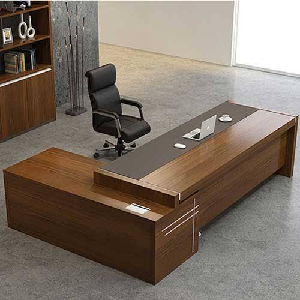

Historically, the use of rooms dates at least to early Minoan cultures about 2200 BC, where excavations at Akrotiri on Santorini reveal clearly defined rooms within certain structures.
In early structures, the different room types could be identified to include bedrooms, kitchens, bathing rooms, closets, reception rooms, and other specialized uses. The aforementioned Akrotiri excavations reveal rooms sometimes built above other rooms connected by staircases, with alabaster appliances such as washbasins, bathing tubs, and, all connected to an elaborate twin plumbing systems of ceramic pipes for cold and hot water separately.
Some rooms were specially designed to support the work of the household, such as kitchens, pantries, and root cellars, all of which were intended for the preparation and storage of food.A home office or study may be used for household paperwork or external business purposes. Some work rooms are designated by the intended activity: for example, a sewing room is used for sewing, and the laundry room is used for washing and ironing laundry.

In the 17th, 18th, and 19th centuries, among those who could afford it, these facilities were kept in separate areas. The kitchen was detached from the main part of the house, or later put in the basement, to reduce the risk of fire and keep the heat and smell of cooking away from the main house during the warm months. The often a simple pit latrine, was put in an outhouse or privy, to keep the smell and insects away from the main house.
A variety of room types have been distinguished over time whose main purpose was socializing with other people.
In previous centuries, very large homes often featured a great hall. This room was so named because it was very large, regardless of any excellence in it. It was originally a public room and most likely seen in the main home of a noble estate.
A sitting room, living room, or parlour is a place for social visits and entertainment.One decorated to appeal to a man might be called a man cave; in an older style, the cabinet was used by men who wanted a separate room. Some large homes have special rooms for entertainment; these may include a library, a home theater, a billiard room, a game room, or a music room.